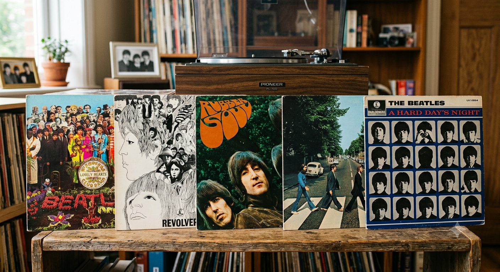
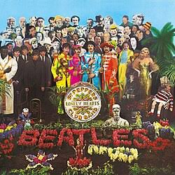
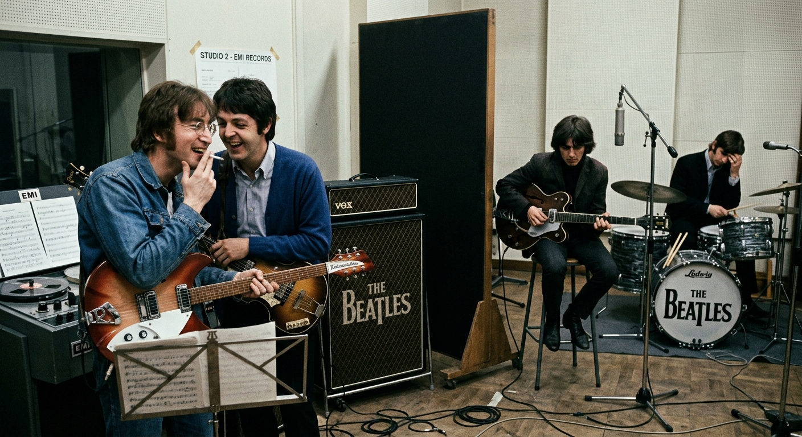
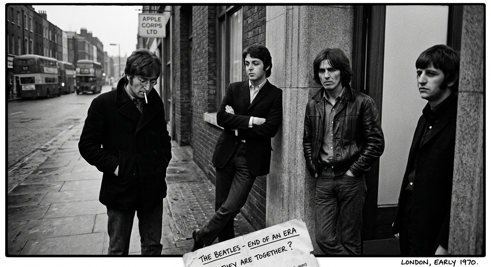
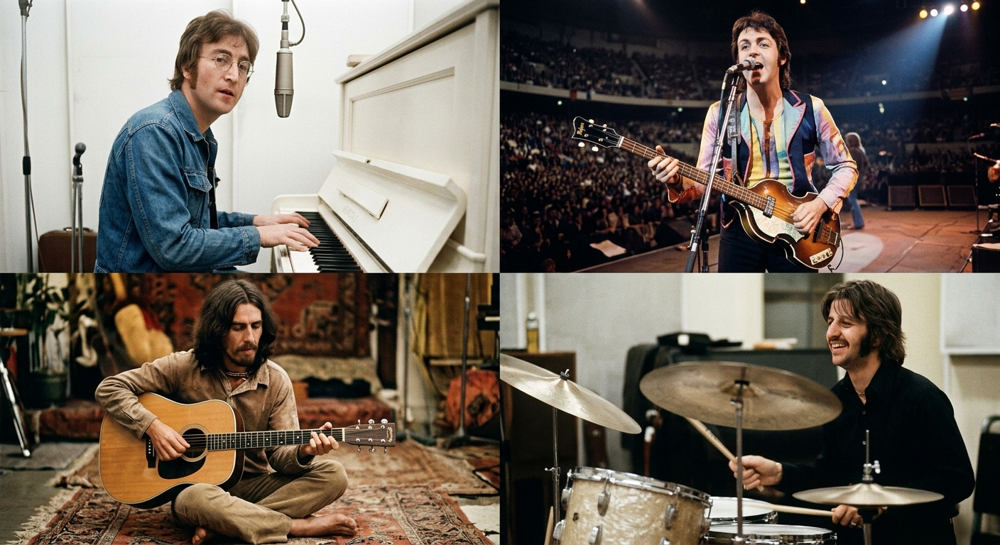

Meu primeiro post
Por: Fernando Zulim
Bem Vindos ao meu Múon Blog ! Aqui vou compartilhar minhas opniões e curiosidades diversas.
Vou compartilhar minhas opniões e curiosidades sobre tudo
Meu primeiro post
Por: Fernando Zulim
Bem Vindos ao meu Múon Blog ! Aqui vou compartilhar minhas opniões e curiosidades diversas.

Álbuns dos Beatles
Por: Fernando Zulim
Nessa postagem sobre TOP 5 Álbuns dos Beatles

Por: Fernando Zulim
O Álbum Sgt. Pepper's Lonely Hearts Club Band é o melhor pois se trata de um trabalho revolucionário feito dentro de um estúdio. No album, John, Paul, George e Ringo assumem um alterego como uma banda de mesmo nome do álbum, onde eles parecem se libertar daquela obrigação de serem "Os Beatles" e produzem um som dramático, com orquestras e faixas que se conectam sem pausas, dando uma sensação imersiva que você não esperaria sendo um ouvinte naquela época

Regime Autoritário da Dupla Lennon-McCartney
Por: Fernando Zulim
Lennon e McCartney eram a principal força criativa dos Beatles e dominavam a composição da banda. Isso acabou limitando o espaço de George Harrison e Ringo Starr. George passou a compor cada vez melhor e criou músicas importantes, como “Something” e “Here Comes the Sun”, mas muitas vezes suas músicas tinham menos espaço nos álbuns. Ringo teve ainda menos liberdade como compositor: durante toda a carreira dos Beatles, apenas duas músicas foram compostas por ele e gravadas pela banda, “Don’t Pass Me By” e “Octopus’s Garden”. Apesar de ser um baterista essencial para o som dos Beatles, sua participação na composição era muito pequena. Assim, embora Lennon e McCartney tenham sido fundamentais para o sucesso da banda, a concentração do poder criativo nos dois pode ser vista como uma das limitações da dinâmica dos Beatles.

O Fim dos Beatles
Por: Fernando Zulim
O fim dos Beatles aconteceu oficialmente em 1970, mas a banda já enfrentava problemas nos anos anteriores. As diferenças entre John Lennon, Paul McCartney, George Harrison e Ringo Starr aumentaram, principalmente por causa de divergências musicais e decisões sobre o futuro do grupo. A morte do empresário Brian Epstein(sem relação), em 1967, também deixou a banda sem uma liderança forte. Depois disso, os integrantes começaram a seguir caminhos cada vez mais diferentes. George queria mais espaço para suas composições, enquanto John e Paul tinham opiniões diferentes sobre a direção musical e administrativa da banda. Em 1969, John Lennon decidiu deixar os Beatles, embora a separação só tenha sido anunciada publicamente em 1970. Paul McCartney anunciou sua própria saída em abril de 1970, confirmando o fim do grupo. O último álbum lançado foi Let It Be, em 1970. Assim, depois de aproximadamente uma década juntos, os Beatles chegaram ao fim por causa de conflitos internos, diferenças criativas e do desejo dos integrantes de seguirem suas próprias carreiras

O Destino dos Beatles Após o Fim
Por: Fernando
Depois do fim dos Beatles, os quatro integrantes seguiram carreiras solo de grande importância. John Lennon lançou trabalhos marcados por temas pessoais e políticos. Seu álbum Imagine (1971) se tornou um dos mais conhecidos de sua carreira, principalmente pela música “Imagine”. Paul McCartney teve uma carreira solo muito bem-sucedida. Ele criou a banda Wings e lançou músicas como “Maybe I’m Amazed” e “Live and Let Die”. Paul continuou sendo um dos músicos mais populares do mundo. George Harrison também teve bastante sucesso. Seu álbum All Things Must Pass (1970) foi muito elogiado e mostrou que ele tinha muitas composições que não haviam recebido espaço nos Beatles. A música “My Sweet Lord” se tornou um de seus maiores sucessos. Ringo Starr seguiu principalmente como cantor e baterista. Lançou vários álbuns e teve sucessos como “Photograph” e “You’re Sixteen”. Também continuou trabalhando com outros músicos e realizando turnês. Assim, mesmo após o fim dos Beatles, os quatro conseguiram construir carreiras próprias, mostrando que o talento da banda não dependia apenas da parceria Lennon–McCartney